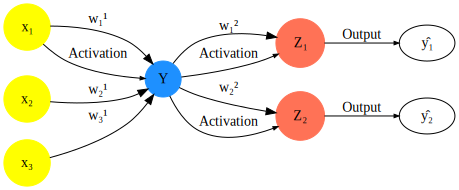
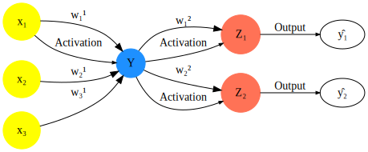
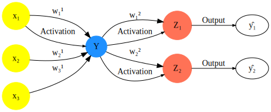

Supervised and Unsupervised Neural Networks
This project explores linearized Bregman iterations for training sparse neural networks.
 

Specializing in advanced classification techniques for Network Intrusion Detection.
This project explores linearized Bregman iterations for training sparse neural networks.

Focused on image classification tasks using advanced CNN techniques.